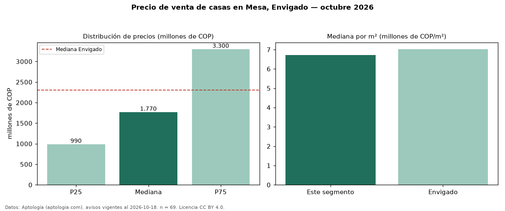

Precio de venta de casas en Mesa, Envigado — octubre 2026
Con 69 avisos vigentes, el precio mediano de casas en venta en Mesa, Envigado es COP 1,77 mil millones. Frente a la mediana de Envigado para casas (COP 2,30 mil millones), queda 23 % por debajo. Por metro cuadrado, la mediana es COP 6,72 millones/m² (n = 65 avisos con área), 4 % por debajo de Envigado (COP 7,02 millones/m²). La mitad central de los avisos va de COP 990 millones a COP 3,30 mil millones (razón 3,3), una dispersión alta. Con el precio por m² de arriendo del mismo segmento (COP 35.616/m² al mes), la rentabilidad bruta implícita es 6,4 % anual (aproximación con medianas de ofertas distintas). El área mediana anunciada es 251 m². El segmento con más oferta es el de 3 o más habitaciones (66 avisos, mediana COP 1,81 mil millones). La administración mediana declarada es COP 962.000 al mes (n = 30). Datos: Aptología (aptologia.com), CC BY 4.0 — https://www.aptologia.com/casas-en-venta/envigado/mesa. Archivos: PDF, CSV con las cifras y gráfica PNG.

| Avisos únicos | 69 |
|---|---|
| Percentil 25 | COP 990.000.000 |
| Mediana | COP 1.770.000.000 |
| Percentil 75 | COP 3.300.000.000 |
| Mediana por m² | COP 6.719.367 |
Fuente: avisos vigentes de portales inmobiliarios recopilados por Aptología, deduplicados (mínimo 30 avisos únicos por celda). Precios pedidos, no cerrados. Fecha: 2026-10-18.